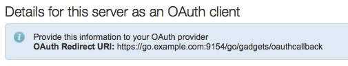
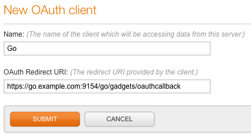
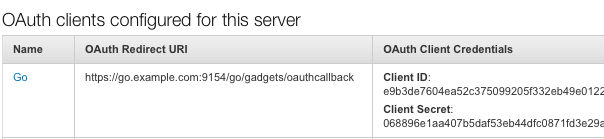
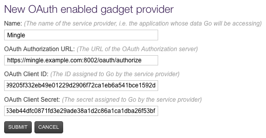
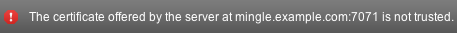
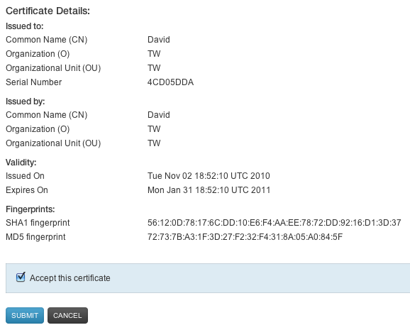
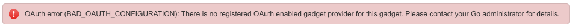
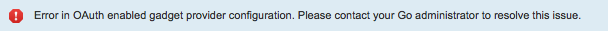
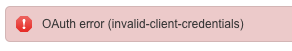

Displaying Mingle gadgets in Go
Before a user can use the Mingle card activity gadget to display Mingle card activity for pipelines in Go, both the Mingle and Go administrators must do a bit of configuration. Mingle must be configured to be an OAuth provider. Go must be configured as an OAuth-capable gadget rendering server. OAuth trust, by way of client ID and client secret, must be established. These configuration steps, as well as a troubleshooting guide, are provided on this page.
A big part of the OAuth protocol depends upon Go and Mingle being configured with some special URLs that match exactly. And these URLs must be HTTPS endpoints. The Go administrator should double check that a secure site URL has been properly specified, via either the siteURL or secureSiteURL attributes of the server element, in the Go configuration XML. The Mingle administrator should make a similar check of his Mingle configuration (although the mechanism for specifying site URLs differs in Mingle).
Step 1 - Configure Mingle as OAuth 2.0 Provider
A Go user is only allowed to see Mingle card activity in Go that he would normally be allowed to see in Mingle. That is, when Go show's Mingle data in its pages, the Mingle authorization rules are not relaxed to allow all members of that Go pipeline group to automatically see the card activity. In order to make this work, Go and Mingle use OAuth 2.0 (v9) as a means of allowing the Go user to establish his identity in Mingle.
The first step of allowing Go and Mingle to use OAuth for this gadget is to configure Mingle as an OAuth 2.0 (v9) Provider. This step must be performed by a Mingle administrator.
1.1 - Capture Go OAuth Redirect URI
Before configuring Mingle, a bit of information must be captured from Go: the Go OAuth Redirect URI. If the Mingle administrator and Go administrator are not the same person, the Mingle admin will need to ask the Go admin for this piece of information. In Go, logged in as an administrator, navigate to to the "Admin > OAuth Enabled Gadget Providers" tab. On this page, in the blue info box, you'll see the OAuth Redirect URI. Copy and paste this URI to a scratch pad for use in the next step. Below is an example screenshot of Go displaying its OAuth Redirect URI. (Please do not attempt to derive your own redirect URL from this screenshot.)
1.2 - Create OAuth client entry in Mingle
In Mingle, logged in as an administrator, go to the home page that lists all projects. In the administration menu at the top of the page, click the 'Manage OAuth clients' link. Click on the "Add Client" button at the bottom of the page to create the new entry in Mingle allowing Go as an OAuth client. In the first field, enter a description of the OAuth client, most likely something like "Go" and in the second field, OAuth Redirect URI, enter the Go URL you captured in the previous step.
Click the Submit button and note that Mingle has generated "Client ID" and "Client Secret" fields. Below is a listing similar to what you will see after you have successfully created the entry for a new OAuth client to Mingle. Copy and paste these values to a scratch pad for the next section. You will also need to copy the Authorization URL (in the blue info box) on this page. If the Mingle administrator and Go administrator are not the same people, the Mingle administrator will need to securely communicate these values to the Go administrator.
Step 2 - Configure Go to render gadgets from Mingle
In Mingle, we have just created an entry for a new OAuth client. Go is that client. You must now configure the Go half of that trust relationship. In Go, logged in as an administrator, navigate to to the "Admin > OAuth Enabled Gadget Providers" tab. Click the 'Add Provider' button to create the new entry. Enter something along the lines of "Mingle" for the Name. Be sure that whatever you enter for Name is something that your users will recognize. For the OAuth Authorize URL, OAuth Client ID, and OAuth Client Secret fields enter the exact values you captured above in step 1.2.
Click submit to save the new entry. If you see the "Gadget provider was successfully created" message you can move on to Step 3.
However, if you see an error message like the one below, indicating that the certificate offered by the server is not trusted, you must complete one more action in this Step.
If you see the above message, you will also see a new section of text on the "New OAuth enabled gadget provider" page on which you have been working. This new section of text is the HTTPS certificate provided by Mingle to facilitate secure communication between Go and Mingle. You need to configure Go to trust this certificate. This piece of configuration is simply ticking the "Accept this configuration" checkbox and re-clicking "Submit." Go should not now be correctly configured to retrieve gadget content from Mingle.
Step 3 - Verify
The final step is to verify by testing an integration. Go to the reference for the Mingle card activity gadget and see if you can configure a Mingle card activity gadget for one of your Go pipelines. If the integration fails, please read through the troubleshooting section below.
Troubleshooting
Gadget does not render user authorization message... instead you see 'BAD_OAUTH_CONFIGURATION: There is no OAuth enabeld gadget provider...
If users are seeing the error below rather than an opportunity to authorize the gadget provider to send Mingle data on your behalf there are two possible problems.
The first possibility is that there simply is not a configured gadget provider. That is, a Go user attempted to use the Mingle card activity gadget without the Go administrator having properly configured the Mingle entry on the OAuth enabled gadget providers page.
The second possibility is that the Mingle URL or Mingle project identifier specified in the Mingle configuration (accessible in the Project Management section of Pipeline Administration) does not match the url specified for the value of the gadget provider's OAuth Authorization URL on the OAuth enabled gadget providers page. Please make sure that these values match.
Authorization popup shows gadget provider configuration error
If, on clicking on the Authorize link, the popup opens but shows this error:
One possible cause is that there is a mismatch between the redirect URI displayed on the Go OAuth Enabled Gadget Providers page and the redirect URI the Mingle administrator entered while creating the OAuth Client entry for Go. Double check that the values are identical.
Another possible cause is that there is a mismatch between the OAuth Client ID displayed on the Mingle OAuth Clients page and the value that the Go administrator entered while creating the gadget provider entry for Mingle. Double check that the values are identical.
When this error is showing in the authorization popup take a look at the value in the browser's address bar. There is most likely a fairly readable error code contained in the address that will reveal the specific configuration error.
User clicks 'Yes' on authorization popup but gadget still not showing
If, upon clicking Yes in the authorization popup, the user sees the error below showing invalid client credentials, there is a mismatch between the OAuth Client Secret values. Double check that the OAuth Client Secret displayed on the Mingle OAuth Clients page is identical to the value that the Mingle administrator entered while creating the gadget provider entry for Go. Note that this error is not a reference to the user's credentials, but to the OAuth trust between Go and Mingle.
